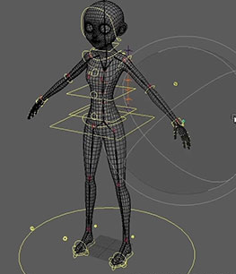
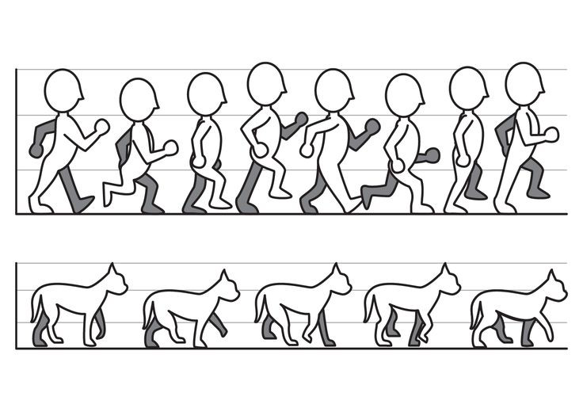

TIPOS DE ANIMACIONES
- Animacion 3D.
La animacion 3D da vida a los objetos digitales, creando la ilusion de que se mueven en un espacio tridimensional.
A pesar de mostrarse en una pantalla 2D, estas animaciones imitan los principios de la tridimension en el mundo real. Este tipo de animaciones se utilizan ahora ampliamente en todos los escenarios, ya sea en peliculas o en anuncios, y se pueden ver en todas partes.

- Animacion 2D.
La animacion bidimensional o 2D consiste en crear movimientos utilizando imagenes estaticas en dos dimensiones.
Mover las imagenes rapidamente en una secuencia crea una ilusion de movimiento, como en una pelicula.Al igual que la animacion en 3D, la animacion en 2D se utiliza mucho en peliculas, anuncios, promociones, etc.

- Animacion stop motion
No consiste en la animacion de dibujos, sino mas bien la secuencia de imagenes de objetos estaticos e inmoviles colocados delante de una camara.
Esta tecnica de aniacion consiste en aparentar el movimiento deichos objetos capturando fotogramas, donde en cada uno de estos se a movido ligeramente el objeto, y en cada nuevo cambio de posision del objeto, debe haber siempre una relacion de direccion orientado al cambio en su trayectoria, guardando asi la mayor continuidad logica de movimiento posible.
Regresar